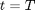
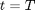

Zero Coupon bond to Zero Coupon Bond
The class adjusts the output frequency of zero coupon bond prices to that specified by an output frequency profile.
Contents
%MATLAB CODE %%%%%%%%%%%%%%%%%%%%%%%%%%%%%%%%%%%%%%%%%%%%%%%%%%%%%%%%%%%%%%%%%%%%%%%%%%% classdef bootstrap_ZCBtoZCB < prursg.Bootstrap.BaseBootstrapAlgorithm
How to Use the Class
Given an input zero coupon bond data series we change the output frequency to that given by [outputfreq].
Properties
Input Data Series
[ZeroCouponBondPrices] - The price of a zero coupon bond,  , at time, , which pays 1 at maturity, .
, at time, , which pays 1 at maturity, .
Data Type: data series
Input Parameters
[outputfreq] - A string that lists the number of monthly, quarterly, semi-annual and annual intervals.
Data Type: string
%MATLAB CODE %%%%%%%%%%%%%%%%%%%%%%%%%%%%%%%%%%%%%%%%%%%%%%%%%%%%%%%%%%%%%%%%%%%%%%%%%%% properties % Data Series ZeroCouponBondPrices = []; % Parameters outputfreq = []; end %%%%%%%%%%%%%%%%%%%%%%%%%%%%%%%%%%%%%%%%%%%%%%%%%%%%%%%%%%%%%%%%%%%%%%%%%%%
List of Methods
The class introduces one method:
[bootstrap_ZCBtoZCB ()] - Function returns the input zero coupon bond data series with a new output frequency profile.
%MATLAB Code %%%%%%%%%%%%%%%%%%%%%%%%%%%%%%%%%%%%%%%%%%%%%%%%%%%%%%%%%%%%%%%%%%%%%%%%%%% methods
% Constructor function obj = bootstrap_ZCBtoZCB () obj = obj@prursg.Bootstrap.BaseBootstrapAlgorithm(); end %%%%%%%%%%%%%%%%%%%%%%%%%%%%%%%%%%%%%%%%%%%%%%%%%%%%%%%%%%%%%%%%%%%%%%%%%%%
ans =
Bootstrap.bootstrap_ZCBtoZCB handle
Package: Bootstrap
Properties:
ZeroCouponBondPrices: []
outputfreq: []
Details of Methods
Description
Takes an input zero coupon bond data series and changes the output frequency profile to that given by, [outputfreq].
Inputs
[ZeroCouponBondPrices] - The price of a zero coupon bond, , at time, , which pays 1 at maturity, .
Data Type: data series
Input Parameters
[outputfreq] - A string that lists the number of monthly, quarterly, semi-annual and annual intervals.
Data Type: string
Outputs
A yield curve of zero coupon bond prices with an output frequency specified by [outputfreq].
Calculation
Sort and clone the input data.
The next step is to identify and set up the output frequency profile which specifies the frequency of outputs e.g. annually or monthly etc.
The input data series is then matched to the output profile.
Finally the data series properties are updated.
%MATLAB Code %%%%%%%%%%%%%%%%%%%%%%%%%%%%%%%%%%%%%%%%%%%%%%%%%%%%%%%%%%%%%%%%%%%%%%%%%%% function results = Bootstrap(obj, DataSeriesIn) newSortDataSeries=Bootstrap.BsSort(); obj.ZeroCouponBondPrices =newSortDataSeries.SortDataSeries... (DataSeriesIn(1).Clone); maxTerm = obj.ZeroCouponBondPrices(1).axes(1).values{1, end}; BsfrequencyprofileObject =Bootstrap.Bsfrequencyprofile... (obj.outputfreq,maxTerm); outputfreqProfile = ... BsfrequencyprofileObject.AdjustedIntervalArray; ZCBPrices_Temp = ... BsfrequencyprofileObject.SmallerDataSeriesObject... (outputfreqProfile,obj.ZeroCouponBondPrices); results = ZCBPrices_Temp ; results.Name = ''; results.source ='iMDP'; results.ticker= 'na'; results.description = 'derived ZCBtoZCB method'; results.ratetype = 'zcb'; results.compounding ='na'; results.compoundingfrequency= 'na'; results.daycount ='na'; results.units ='absolute'; end
end
end